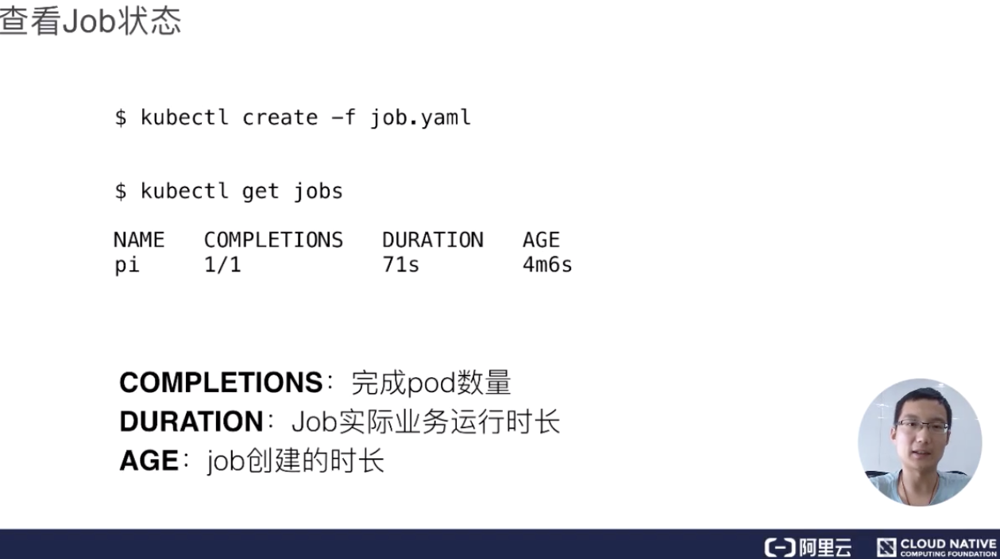
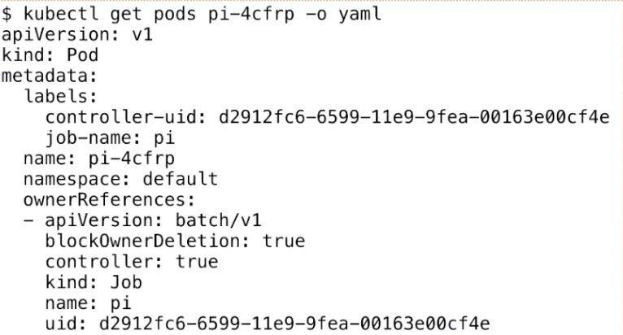
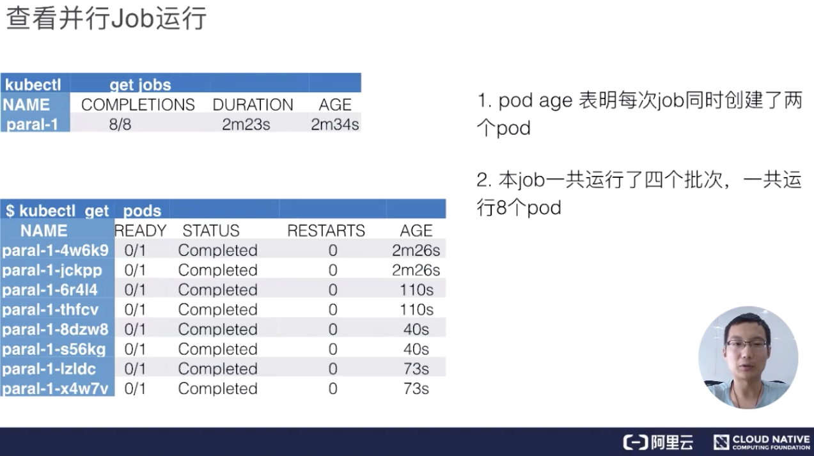
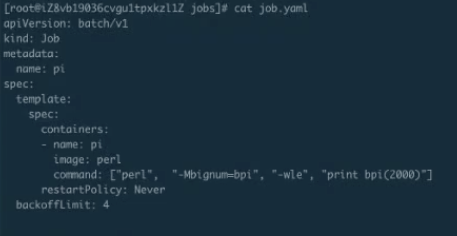
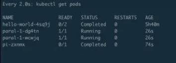
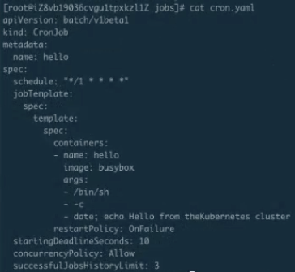
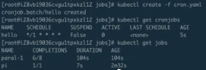
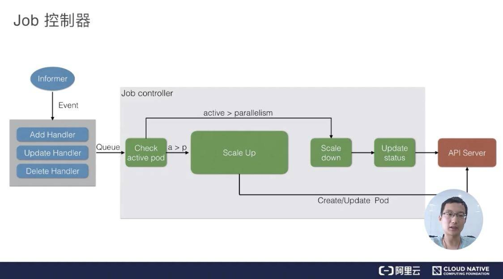
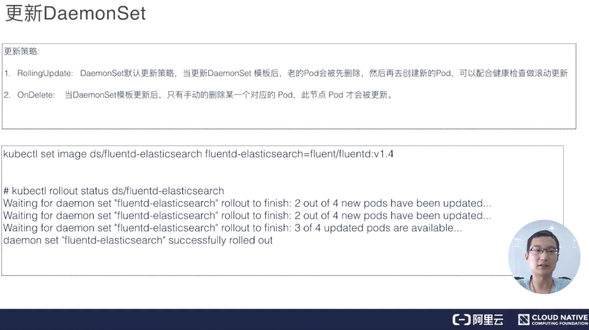
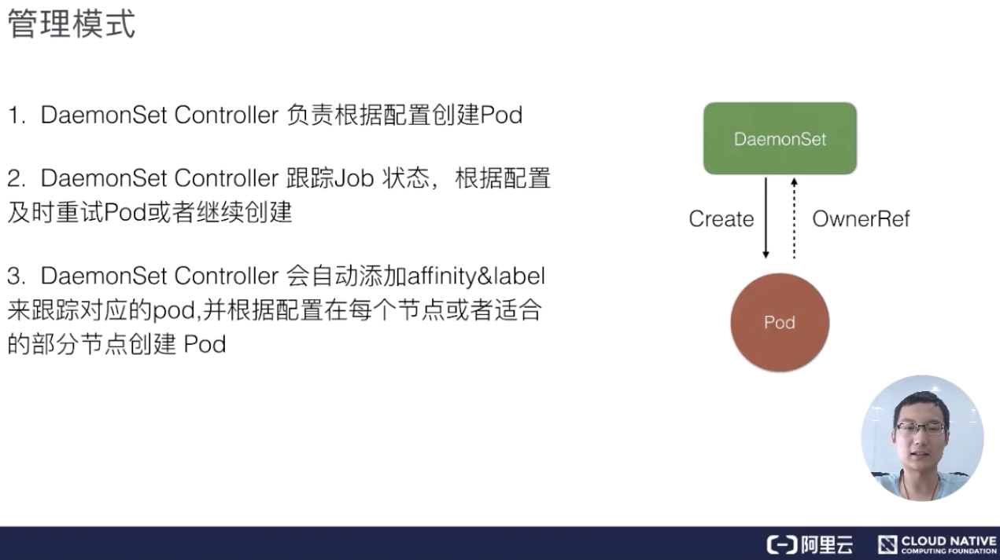

- 01 第一堂“云原生”课.md.html
- 02 容器基本概念.md.html
- 03 Kubernetes 核心概念.md.html
- 04 理解 Pod 和容器设计模式.md.html
- 05 应用编排与管理：核心原理.md.html
- 06 应用编排与管理.md.html
- 07 应用编排与管理：Job & DaemonSet.md.html
- 08 应用配置管理.md.html
- 09 应用存储和持久化数据卷：核心知识.md.html
- 10 应用存储和持久化数据卷：存储快照与拓扑调度(至天).md.html
- 11 可观测性：你的应用健康吗？（莫源）.md.html
- 12 可观测性-监控与日志（莫源）.md.html
- 13 Kubernetes 网络概念及策略控制（叶磊）.md.html
- 14 Kubernetes Service（溪恒）.md.html
- 15 从 0 开始创作云原生应用（殷达）.md.html
- 16 深入解析 Linux 容器（华敏）.md.html
07 应用编排与管理：Job & DaemonSet
Job
需求来源
Job 背景问题
首先我们来看一下 Job 的需求来源。我们知道 K8s 里面，最小的调度单元是 Pod，我们可以直接通过 Pod 来运行任务进程。这样做将会产生以下几种问题：
- 我们如何保证 Pod 内进程正确的结束？
- 如何保证进程运行失败后重试？
- 如何管理多个任务，且任务之间有依赖关系？
- 如何并行地运行任务，并管理任务的队列大小？
Job：管理任务的控制器
我们来看一下 Kubernetes 的 Job 为我们提供了什么功能：
- 首先 kubernetes 的 Job 是一个管理任务的控制器，它可以创建一个或多个 Pod 来指定 Pod 的数量，并可以监控它是否成功地运行或终止；
- 我们可以根据 Pod 的状态来给 Job 设置重置的方式及重试的次数；
- 我们还可以根据依赖关系，保证上一个任务运行完成之后再运行下一个任务；
- 同时还可以控制任务的并行度，根据并行度来确保 Pod 运行过程中的并行次数和总体完成大小。
用例解读
我们根据一个实例来看一下Job是如何来完成下面的应用的。
Job 语法
上图是 Job 最简单的一个 yaml 格式，这里主要新引入了一个 kind 叫 Job，这个 Job 其实就是 job-controller 里面的一种类型。 然后 metadata 里面的 name 来指定这个 Job 的名称，下面 spec.template 里面其实就是 pod 的 spec。
这里面的内容都是一样的，唯一多了两个点：
- 第一个是 restartPolicy，在 Job 里面我们可以设置 Never、OnFailure、Always 这三种重试策略。在希望 Job 需要重新运行的时候，我们可以用 Never；希望在失败的时候再运行，再重试可以用 OnFailure；或者不论什么情况下都重新运行时 Alway；
- 另外，Job 在运行的时候不可能去无限的重试，所以我们需要一个参数来控制重试的次数。这个 backoffLimit 就是来保证一个 Job 到底能重试多少次。
所以在 Job 里面，我们主要重点关注的一个是 restartPolicy 重启策略和 backoffLimit 重试次数限制。
Job 状态

Job 创建完成之后，我们就可以通过 kubectl get jobs 这个命令，来查看当前 job 的运行状态。得到的值里面，基本就有 Job 的名称、当前完成了多少个 Pod，进行多长时间。
AGE的含义是指这个 Pod 从当前时间算起，减去它当时创建的时间。这个时长主要用来告诉你 Pod 的历史、Pod 距今创建了多长时间。
DURATION主要来看我们 Job 里面的实际业务到底运行了多长时间，当我们的性能调优的时候，这个参数会非常的有用。COMPLETIONS主要来看我们任务里面这个 Pod 一共有几个，然后它其中完成了多少个状态，会在这个字段里面做显示。
查看 Pod
下面我们来看一下 Pod，其实 Job 最后的执行单元还是 Pod。我们刚才创建的 Job 会创建出来一个叫“pi”的一个 Pod，这个任务就是来计算这个圆周率，Pod 的名称会以“job−name−job−name−{random-suffix}”，我们可以看一下下面 Pod 的 yaml 格式。

它比普通的 Pod 多了一个叫 ownerReferences，这个东西来声明此 pod 是归哪个上一层 controller 来管理。可以看到这里的 ownerReferences 是归 batch/v1，也就是上一个 Job 来管理的。这里就声明了它的 controller 是谁，然后可以通过 pod 返查到它的控制器是谁，同时也能根据 Job 来查一下它下属有哪些 Pod。
并行运行 Job
我们有时候有些需求：希望 Job 运行的时候可以最大化的并行，并行出 n 个 Pod 去快速地执行。同时，由于我们的节点数有限制，可能也不希望同时并行的 Pod 数过多，有那么一个管道的概念，我们可以希望最大的并行度是多少，Job 控制器都可以帮我们来做到。
这里主要看两个参数：一个是 completions，一个是 parallelism。
- 首先第一个参数是用来指定本 Pod 队列执行次数。可能这个不是很好理解，其实可以把它认为是这个 Job 指定的可以运行的总次数。比如这里设置成 8，即这个任务一共会被执行 8 次；
- 第二个参数代表这个并行执行的个数。所谓并行执行的次数，其实就是一个管道或者缓冲器中缓冲队列的大小，把它设置成 2，也就是说这个 Job 一定要执行 8 次，每次并行 2 个 Pod，这样的话，一共会执行 4 个批次。
查看并行 Job 运行

下面来看一下它的实际运行效果，上图就是当这个 Job 整体运行完毕之后可以看到的效果，首先看到 job 的名字，然后看到它一共创建出来了 8 个 pod，执行了 2 分 23 秒，这是创建的时间。
接着来看真正的 pods，pods 总共出来了 8 个 pod，每个 pod 的状态都是完成的，然后来看一下它的 AGE，就是时间。从下往上看，可以看到分别有 73s、40s、110s 和 2m26s。每一组都有两个 pod 时间是相同的，即：时间段是 40s 的时候是最后一个创建、 2m26s 是第一个创建的。也就是说，总是两个 pod 同时创建出来，并行完毕、消失，然后再创建、再运行、再完毕。
比如说，刚刚我们其实通过第二个参数来控制了当前 Job 并行执行的次数，这里就可以了解到这个缓冲器或者说管道队列大小的作用。
Cronjob 语法
下面来介绍另外一个 Job，叫做 CronJob，其实也可以叫定时运行 Job。CronJob 其实和 Job 大体是相似的，唯一的不同点就是它可以设计一个时间。比如说可以定时在几点几分执行，特别适合晚上做一些清理任务，还有可以几分钟执行一次，几小时执行一次等等，这就叫定时任务。
定时任务和 Job 相比会多几个不同的字段：
- schedule：schedule 这个字段主要是设置时间格式，它的时间格式和 Linux 的 crontime 是一样的，所以直接根据 Linux 的 crontime 书写格式来书写就可以了。举个例子： */1 指每分钟去执行一下 Job，这个 Job 需要做的事情就是打印出大约时间，然后打印出“Hello from the kubernetes cluster” 这一句话；
- **startingDeadlineSeconds：**即：每次运行 Job 的时候，它最长可以等多长时间，有时这个 Job 可能运行很长时间也不会启动。所以这时，如果超过较长时间的话，CronJob 就会停止这个 Job；
- concurrencyPolicy：就是说是否允许并行运行。所谓的并行运行就是，比如说我每分钟执行一次，但是这个 Job 可能运行的时间特别长，假如两分钟才能运行成功，也就是第二个 Job 要到时间需要去运行的时候，上一个 Job 还没完成。如果这个 policy 设置为 true 的话，那么不管你前面的 Job 是否运行完成，每分钟都会去执行；如果是 false，它就会等上一个 Job 运行完成之后才会运行下一个；
- **JobsHistoryLimit：**这个就是每一次 CronJob 运行完之后，它都会遗留上一个 Job 的运行历史、查看时间。当然这个额不能是无限的，所以需要设置一下历史存留数，一般可以设置默认 10 个或 100 个都可以，这主要取决于每个人集群不同，然后根据每个人的集群数来确定这个时间。
操作演示
Job 的编排文件
下面看一下具体如何使用 Job。

Job 的创建及运行验证
首先看一下 job.yaml。这是一个非常简单的计算 pi 的一个任务。使用 kubectl creat-f job.yaml，这样 job 就能提交成功了。来看一下 kubectl.get.jobs，可以看到这个 job 正在运行；get pods 可以看到这个 pod 应该是运行完成了，那么接下来 logs 一下这个 job 以及 pod。可以看到下图里面打印出来了圆周率。
并行 Job 的编排文件
下面再来看第二个例子：
并行 Job 的创建及运行验证
这个例子就是指刚才的并行运行 Job 创建之后，可以看到有第二个并行的 Job。
现在已经有两个 Pod 正在 running，可以看到它大概执行了快到 30s

30s 之后它应该会起第二个。
第一批的 pod 已经执行完毕，第二批的 pod 正在 running，每批次分别是两个Pod。也就是说后面每隔 40s 左右，就会有两个 pod 在并行执行，它一共会执行 4 批，共 8 个 pod，等到所有的 pod 执行完毕，就是刚才所说的并行执行的缓冲队列功能。
过一段时间再看这个 pods，可以发现第二批已经执行结束，接下来开始创建第三批……
Cronjob 的编排文件
下面来看第三个例子 —— CronJob。 CronJob 是每分钟执行一次，每次一个 job。

Cronjob 的创建及运行验证
如下图 CronJob 已经创建了，可以通过 get cronjob 来看到当前有一个 CronJob，这个时候再来看 jobs，由于它是每分钟执行一次，所以得稍微等一下。

同时可以看到，上一个 job 还在运行，它的时间是 2m12s 左右，它的完成度是 7/8、6/8，刚刚看到 7/8 到 8/8，也就是说我们上一个任务执行了最后一步，而且每次都是两个两个地去运行。每次两个运行的 job 都会让我们在运行一些大型工作流或者工作任务的时候感到特别的方便。
上图中可以看到突然出现了一个 job，“hello-xxxx”这个 job 就是刚才所说的 CronJob。它距离刚才 CronJob 提交已经过去 1 分钟了，这样就会自动创建出来一个 job，如果不去干扰它的话，它以后大概每一分钟都会创建出来这么一个 job，除非等我们什么时候指定它不可以再运行的时候它才会停止创建。
在这里 CronJob 其实主要是用来运作一些清理任务或者说执行一些定时任务。比如说 Jenkins 构建等方面的一些任务，会特别有效。
架构设计
Job 管理模式
我们来看一下 job 的架构设计。Job Controller 其实还是主要去创建相对应的 pod，然后 Job Controller 会去跟踪 Job 的状态，及时地根据我们提交的一些配置重试或者继续创建。同时我们刚刚也提到，每个 pod 会有它对应的 label，来跟踪它所属的 Job Controller，并且还去配置并行的创建， 并行或者串行地去创建 pod。
Job 控制器

上图是一个 Job 控制器的主要流程。所有的 job 都是一个 controller，它会 watch 这个 API Server，我们每次提交一个 Job 的 yaml 都会经过 api-server 传到 ETCD 里面去，然后 Job Controller 会注册几个 Handler，每当有添加、更新、删除等操作的时候，它会通过一个内存级的消息队列，发到 controller 里面。
通过 Job Controller 检查当前是否有运行的 pod，如果没有的话，通过 Scale up 把这个 pod 创建出来；如果有的话，或者如果大于这个数，对它进行 Scale down，如果这时 pod 发生了变化，需要及时 Update 它的状态。
同时要去检查它是否是并行的 job，或者是串行的 job，根据设置的配置并行度、串行度，及时地把 pod 的数量给创建出来。最后，它会把 job 的整个的状态更新到 API Server 里面去，这样我们就能看到呈现出来的最终效果了。
DaemonSet
需求来源
DaemonSet 背景问题
下面介绍第二个控制器：**DaemonSet。**同样的问题：如果我们没有 DaemonSet 会怎么样？下面有几个需求：
- 首先如果希望每个节点都运行同样一个 pod 怎么办？
- 如果新节点加入集群的时候，想要立刻感知到它，然后去部署一个 pod，帮助我们初始化一些东西，这个需求如何做？
- 如果有节点退出的时候，希望对应的 pod 会被删除掉，应该怎么操作？
- 如果 pod 状态异常的时候，我们需要及时地监控这个节点异常，然后做一些监控或者汇报的一些动作，那么这些东西运用什么控制器来做？
DaemonSet：守护进程控制器
DaemonSet 也是 Kubernetes 提供的一个 default controller，它实际是做一个守护进程的控制器，它能帮我们做到以下几件事情：
- 首先能保证集群内的每一个节点都运行一组相同的 pod；
- 同时还能根据节点的状态保证新加入的节点自动创建对应的 pod；
- 在移除节点的时候，能删除对应的 pod；
- 而且它会跟踪每个 pod 的状态，当这个 pod 出现异常、Crash 掉了，会及时地去 recovery 这个状态。
用例解读
DaemonSet 语法
下面举个例子来看一下，DaemonSet.yaml 会稍微长一些。
首先是 kind:DaemonSet。如果前面学过 deployment 后，其实我们再看这个 yaml 会比较简单。例如它会有 matchLabel，通过 matchLabel 去管理对应所属的 pod，这个 pod.label 也要和这个 DaemonSet.controller.label 想匹配，它才能去根据 label.selector 去找到对应的管理 Pod。下面 spec.container 里面的东西都是一致的。
这里用 fluentd 来做例子。DaemonSet 最常用的点在于以下几点内容：
- 首先是存储，GlusterFS 或者 Ceph 之类的东西，需要每台节点上都运行一个类似于 Agent 的东西，DaemonSet 就能很好地满足这个诉求；
- 另外，对于日志收集，比如说 logstash 或者 fluentd，这些都是同样的需求，需要每台节点都运行一个 Agent，这样的话，我们可以很容易搜集到它的状态，把各个节点里面的信息及时地汇报到上面；
- 还有一个就是，需要每个节点去运行一些监控的事情，也需要每个节点去运行同样的事情，比如说 Promethues 这些东西，也需要 DaemonSet 的支持。
查看 DaemonSet 状态
创建完 DaemonSet 之后，我们可以使用 kubectl get DaemonSet（DaemonSet 缩写为 ds）。可以看到 DaemonSet 返回值和 deployment 特别像，即它当前一共有正在运行的几个，然后我们需要几个，READY 了几个。当然这里面，READY 都是只有 Pod，所以它最后创建出来所有的都是 pod。
这里有几个参数，分别是：需要的 pod 个数、当前已经创建的 pod 个数、就绪的个数，以及所有可用的、通过健康检查的 pod；还有 NODE SELECTOR，因为 NODE SELECTOR 在 DaemonSet 里面非常有用。有时候我们可能希望只有部分节点去运行这个 pod 而不是所有的节点，所以有些节点上被打了标的话，DaemonSet 就只运行在这些节点上。比如，我只希望 master 节点运行某些 pod，或者只希望 Worker 节点运行某些 pod，就可以使用这个 NODE SELECTOR。
更新 DaemonSet

其实 DaemonSet 和 deployment 特别像，它也有两种更新策略：一个是 RollingUpdate，另一个是 OnDelete。
- RollingUpdate 其实比较好理解，就是会一个一个的更新。先更新第一个 pod，然后老的 pod 被移除，通过健康检查之后再去见第二个 pod，这样对于业务上来说会比较平滑地升级，不会中断；
- OnDelete 其实也是一个很好的更新策略，就是模板更新之后，pod 不会有任何变化，需要我们手动控制。我们去删除某一个节点对应的 pod，它就会重建，不删除的话它就不会重建，这样的话对于一些我们需要手动控制的特殊需求也会有特别好的作用。
操作演示
DaemonSet 的编排
下面举一个例子。比如说我们去改了些 DaemonSet 的镜像，然后看到了它的状态，它就会去一个一个地更新。
上图这个就是刚才 DaemonSet 的 yaml，会比刚才会多一些， 我们做一些资源的限制，这个都不影响。
DaemonSet 的创建与运行验证
下面我们创建一下 DaemonSet ，然后再看一下它的状态。下图就是我们刚才看到的 DaemonSet 在 ready 里打出来的状态。
从下图中可以看到，一共有 4 个 pod 被创建出来。为什么是 4 个 pod呢？因为只有 4 个节点，所以每个节点上都会运行一个对应的 pod。
DaemonSet 的更新
这时，我们来更新 DaemonSet， 执行完了kubectl apply -f 后，它的 DaemonSet 就已经更新了。接下来我们去查看 DaemonSet 的更新状态。
上图中可以看到：DaemonSet 默认这个是 RollingUpdate 的，我们看到是 0-4，现在是 1-4，也就是说它在更新第一个，第一个更新完成会去更新第二个，第二个更新完，就更新第三个……这个就是 RollingUpdate。RollingUpdate 可以做到全自动化的更新，不用有人值守，而是一个一个地去自动更新，更新的过程也比较平滑，这样可以有利于我们在现场发布或者做一些其他操作。
上图结尾处可以看到，整个的 DaemonSet 已经 RollingUpdate 完毕。
架构设计
DaemonSet 管理模式

接下来看一下 DaemonSet 架构设计。DaemonSet 还是一个 controller，它最后真正的业务单元也是 Pod，DaemonSet 其实和 Job controller 特别相似，它也是通过 controller 去 watch API Server 的状态，然后及时地添加 pod。唯一不同的是，它会监控节点的状态，节点新加入或者消失的时候会在节点上创建对应的 pod，然后同时根据你配置的一些 affinity 或者 label 去选择对应的节点。
DaemonSet 控制器
最后我们来看一下 DaemonSet 的控制器，DaemonSet 其实和 Job controller 做的差不多：两者都需要根据 watch 这个 API Server 的状态。现在 DaemonSet 和 Job controller 唯一的不同点在于，DaemonsetSet Controller需要去 watch node 的状态，但其实这个 node 的状态还是通过 API Server 传递到 ETCD 上。
当有 node 状态节点发生变化时，它会通过一个内存消息队列发进来，然后DaemonSet controller 会去 watch 这个状态，看一下各个节点上是都有对应的 Pod，如果没有的话就去创建。当然它会去做一个对比，如果有的话，它会比较一下版本，然后加上刚才提到的是否去做 RollingUpdate？如果没有的话就会重新创建，Ondelete 删除 pod 的时候也会去做 check 它做一遍检查，是否去更新，或者去创建对应的 pod。
当然最后的时候，如果全部更新完了之后，它会把整个 DaemonSet 的状态去更新到 API Server 上，完成最后全部的更新。
本节总结
- Job & CronJobs 基础操作与概念解析：本节详细介绍了 Job 和 CronJob 的概念，并通过两个实际的例子介绍了 Job 和 CronJob 的使用，对于 Job 和 CronJob 内的各种功能便签都进行了详细的演示；
- DaemonSet 基础操作与概念解析：通过类比 Deployment 控制器，我们理解了一下 DaemonSet 控制器的工作流程与方式，并且通过对 DaemonSet 的更新了解了滚动更新的概念和相对应的操作方式。